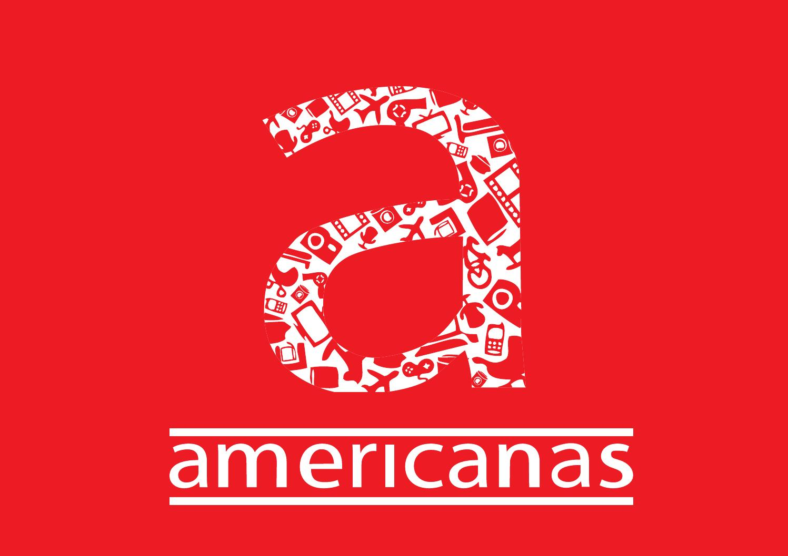

Onde comprar meus games e acessórios na WEB?
Sempre quando vamos adquirir nossos games ou acessórios eltrônicos ficamos com aquela dúvida de qual site é mais confiável e com o preço mais em conta. Ultimamente o mercado livro tem tido preços imbatíveis, porém, tem muito anúncio que trata-se de golpe.
Portanto, nós da TecGames separamos uma lista (não está elencado por ranking) das lojas em que nós costumamos comprar e que são de nossa confiança e preços agradáveis. Bora lá?!
LOJAS AMERICANAS
A Lojas Americanas S.A. é uma das maiores e mais tradicionais redes de varejo do país. Com 89 anos de vida, a empresa conta com mais de 1.320 lojas com presença em todo o território nacional e com 4 centros de distribuição, em São Paulo, Rio de Janeiro, Recife e Uberlândia, atuando também no comércio eletrônico, representado pela B2W - Companhia Digital. A rede comercializa mais de 60.000 itens de 2.000 fornecedores diferentes, o que faz com que a Lojas Americanas detenha uma grande participação do comércio brasileiro de brinquedos, bombonière, lingerie, CDs e DVDs, jogos, higiene e beleza e utilidades domésticas.
AMAZON.COM
As Amazon Spheres, parte do campus da sede da Amazon em Seattle. Amazon.com, Inc. Amazon.com, Inc. (nome fantasia: Amazon; NASDAQ: AMZN) é uma empresa transnacional de tecnologia dos Estados Unidos que foca em comércio electrónico, computação em nuvem, streaming digital e inteligência artificial.
No dia 18 de outubro de 2017, deu um grande passo no território brasileiro, iniciando as vendas de eletrônicos no país. Especialistas afirmam que os investimentos da empresa são graduais, tendo em vista suas decisões, como a aquisição da rede de supermercados Whole Foods e parcerias no México.
MAGAZINE LUIZA
Magazine Luiza é uma rede varejista de eletrônicos e móveis, fundada em 1957 na cidade de Franca, interior de São Paulo, por Luiza Trajano Donato e Pelegrino José Donato. O Magazine Luiza possui mais de 1000 lojas, está presente em 18 estados do país e seu modelo de negócio hoje caracteriza-se como uma plataforma digital com pontos físicos.
Desde janeiro de 2016, seu presidente é Frederico Trajano, de 43 anos, filho de Luiza Helena Trajano, sobrinha da fundadora da empresa, Luiza Trajano Donato. Sua gestão foi a responsável pela transformação digital da companhia. Com o objetivo de desenvolver produtos e serviços, o Magazine Luiza criou em 2012, o laboratório de Tecnologia e Inovação. O Luizalabs é formado por uma equipe de engenheiros e desenvolvedores e tem como foco projetos de inovação para todos os canais de venda da companhia.
PONTOFRIO
A história da rede Pontofrio foi escrita pelas mãos do imigrante romeno Alfredo João Monteverde. A varejista nasceu no Rio de Janeiro, ainda capital do país, em 1946. Alfredo iniciou seus negócios na área de atacado, importando pneus e outros artefatos. A venda de eletrodomésticos teve início com a importação de mil geladeiras, dos Estados Unidos, da marca ‘Cold Spot’, produto que acabou por influenciar na escolha definitiva do nome do negócio. Em 1950, Monteverde abriu sua primeira loja no centro do Rio de Janeiro, na Rua Uruguaiana, nº 134. Rapidamente se tornou uma das principais lojas de varejo da região e já vendia geladeiras e máquinas de costura importadas, até fogões nacionais.
Em 2012, a Globex Utilidades S/A passa a se chamar Via Varejo, empresa que passa a administrar também as unidades de Casas Bahia. É também neste período que a marca começa a ser reposicionada no mercado brasileiro. Depois de alguns estudos e pesquisas, a área de Marketing, apresenta uma nova comunicação que destaca a tecnologia aplicada à vida das pessoas, fechando um ciclo de mudanças iniciado com reformas de loja, novo mix de produtos, definição de público alvo, logotipo, slogan e assinatura sonora.
CARREFOUR

O Brasil foi o destino escolhido para a primeira loja Carrefour do continente americano. Com o lançamento de novas lojas e aquisição de redes regionais como Planaltão, Roncetti, Mineirão, Rainha, Dallas, Big, Eldorado, Continente e Atacadão.[2] A rede expandiu-se tornando o Carrefour uma das maiores empresas varejistas do país. A disputa pela liderança no setor varejista é acirrada, todavia, quando da aquisição da rede Atacadão, chegou-se a anunciar a tomada da liderança por parte do grupo Carrefour. Seus maiores concorrentes são o GPA, o Walmart e a Cencosud que entrou na briga com a aquisição das redes GBarbosa, Mercantil Rodrigues, Perini, Bretas e Prezunic. No Brasil, a Rede Champion virou Carrefour Bairro. São lojas reduzidas dos hipermercados Carrefour. A bandeira Carrefour Bairro está presente somente no país.
A empresa interrompeu suas operações de vendas pelo comércio eletrônico no dia 7 de dezembro de 2012, com a justificativa de reestruturação do grupo no Brasil. No dia 26 de julho de 2016 (após 4 anos inativo), a empresa retorna com a venda comércio eletrônico, com início para apenas a região sudeste do Brasil.